Виставка «Той день»
Зняли у форматі 360° кабінет Президента України, зал засідань Верховної Ради та місце поховання Тараса Шевченка в Каневі.

360°-відео, VR-інсталяції та експерименти 360discoVR з 2015 року.
Зняли у форматі 360° кабінет Президента України, зал засідань Верховної Ради та місце поховання Тараса Шевченка в Каневі.
Знімали Драгобрат і Бакоту у форматі 360° для Ukraine WOW 2025.

28 серпня – 15 жовтня 2021 року
Підготували матеріали для VR-зон інтерактивної виставки Smile. Експозиція в двох морських контейнерах із понад 40 інтерактивами та 6 VR-станціями подорожувала Києвом, Одесою, Львовом, Харковом і Дніпром. Концепцію та реалізацію виставки створила агенція Gres Todorchuk.
Для мультимедійної виставки «Чорнобиль. Подорож» до 35-ї річниці аварії на ЧАЕС ми підготували VR-застосунок «Зона відчуження з висоти пташиного польоту» й оновили документальний фільм про Новий безпечний конфайнмент.

Організували онлайн-трансляцію 360-відео для одного з учасників марафону. Унікальність задачі полягала в тому, що трансляція здійснювалась з мобільної камери через мобильний інтернет у 4К якості з мінімальною затримкою.
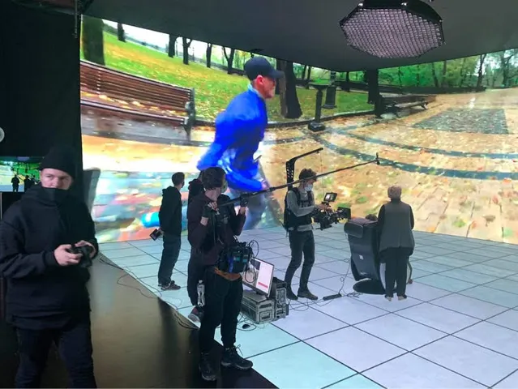
Черговий приклад, коли 360 зйомки допомагають "розширити рамки" звичайних відео.

Український Інститут вирішив організувати на фестивалі у Відні спеціальну байк-станцію, щоб познайомити відвідувачів заходу із сучасною Україною за допомогою віртуальної реальності. Ми йому в цьому допомогли.
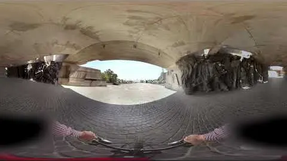
«Музей Прийняття» — це перший у світі інтерактивний онлайн-музей, який дозволить кожному прожити досвід батьків, які прийняли своїх дітей попри стереотипні уявлення про гомосексуальну орієнтацію та гендерну ідентичність.

Для інтерактивної виставки ми знімали з дрона над Києвом, спускалися до доменної печі й виходили на ринг з Олександром Усиком. Глядачі могли побувати на Синевирі й у кабіні машиніста «Інтерсіті», політати над монументом «Батьківщина-мати», Невицьким замком і урочищем «Каскади», відвідати тренування Усика, ливарний двір печі №9 у Кривому Розі та міст Микити Шаленого.
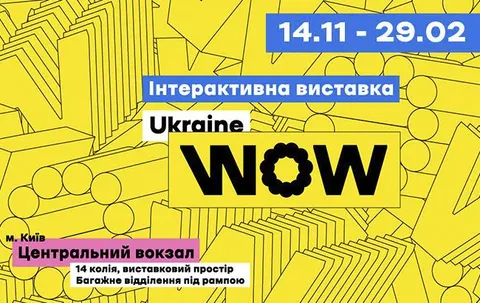
Попрацювали над презентаційним "відео 360" для компанії "PepsiCo" на заводі дитячого харчування "Агуша". Дивно, наскільки все автоматизовано, а люди лише стежать за процесом.
За перший місяць ролик набрав понад 15 мільйонів переглядів. На той час це була одна з наших найскладніших зйомок сферичного відео.
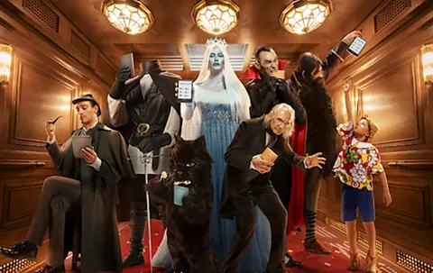
Два дні на Сході України. Дві історії місцевих жителів.
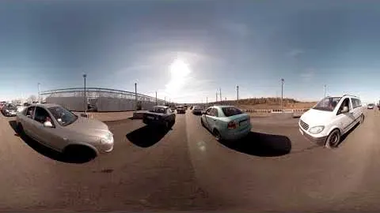
Чергова робота з суперагентством GTPR. Проект включав в себе два відеоролика про роботу машиністів і диспетчерів на українській залізниці.
Завжди з цікавістю ставимося до соціальних проектів, тому що віртуальна реальність дозволяє абсолютно по новому розповідати про різні проблеми. Для проекту "Ті, що вражаються" спробували "перенести" людей в роль людини на візку.
"Дике поле" - українське кіно нової хвилі. Ми знімали бекстейдж і кілька ігрових епізодів з акторами. Дивовижний досвід.
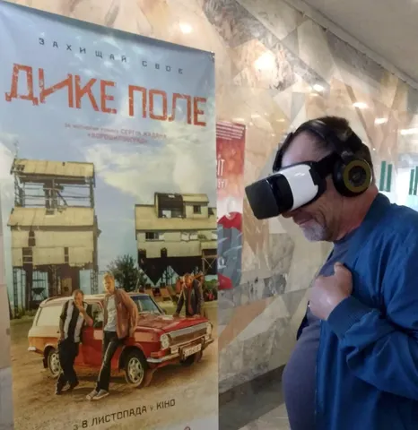
Для цієї унікальної інтерактивної виставки ми проникли в НАБУ і відзняли в 360, де працюють детективи і тренується спецназ. Було дуже цікаво.
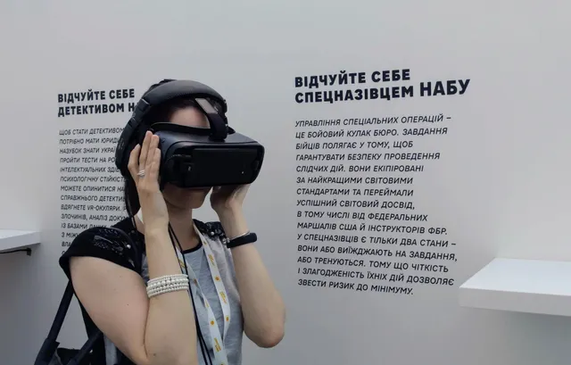
Взяли участь у створенні презентаційного 360°-відео про підводний готель Hilton на Мальдівах.

В рамках фестивалю ZONA Натхнення зробили 360 відео з доповненою реальністю - перенесли всю Поштову площу під Арку - новий саркофаг на ЧАЕС.
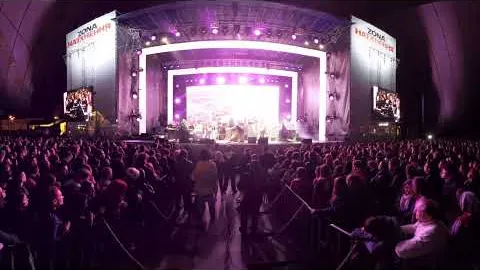
4K, 1 500 кадрів, 15 мільйонів полігонів і хмари на основі системи частинок. Рендер на Core i7 зайняв близько 64 днів.

Американська кооперація - взяли участь в створенні презентаційного 360-відео для одного з кращих притулків для диких тварин в США.
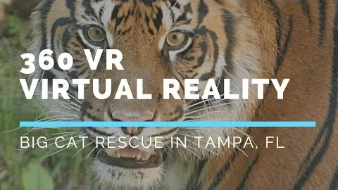
Коли дуже хочеться "хайпанути" на горячій темі, виходять такі експерименти.

Європейська кооперація - взяли участь у створенні кількох кліпів шведської співачки Frida Sundemo.


Наш перший досвід 360°-трансляції футбольного матчу між двома провідними клубами України.
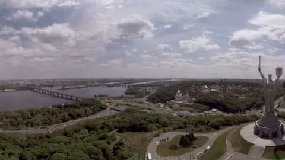
Перша онлайн-трансляція в форматі 360 в Україні! І відразу зі студії одного з центральних каналів країни! Вперше глядачі змогли подивитися в прямому ефірі, що відбувається в студії під час цього самого прямого ефіру.
Для цієї інтерактивної виставки ми підготували відео зі студії ТСН (знімали, поки йшов прямий ефір) і з залу засідань Верховної Ради. Також, там демонструвалася наша робота для Samsung про новий сарковаг на ЧАЕС.
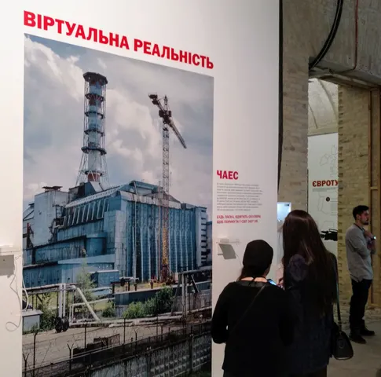
Один із наших найбільших спільних проєктів із LIMELITE. Знімали шість днів в осінньому Будапешті.
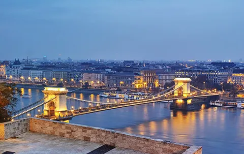
Це наш найголовніший проект, оскільки довелося виступити і в ролі сценариста, і продюсера, і режисера, і оператора ... Документальний фільм про Новий Безпечний Конфайнмент для 4-го енергоблоку Чорнобильської АЕС.

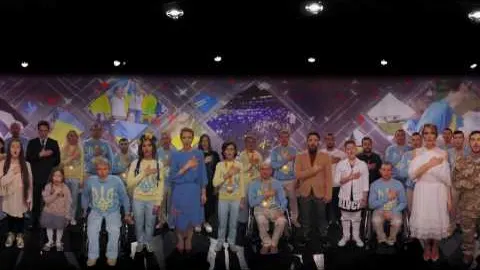

Для сцен з автомобілями майже всі фони зняли 360°-камерою, а потім додали на етапі постпродакшну до кадрів, знятих на зеленому тлі.
Для віртуальної екскурсії заводом «Індар» використали різні способи зйомки, від камери на штативі до проходів із системою стабілізації. Екскурсія не виходила у відкритий доступ.
Знімали відеопанорами в Києві, Одесі та Львові для інтерактивного квесту Jack Daniel’s.
Наш перший ролик про автомобілі. Випробували різні конфігурації камер у салоні та зовні.
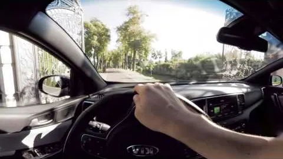
24 серпня 2016
Samsung облаштувала на Хрещатику VR-зону зі ста гарнітурами Gear VR. Серед матеріалів показували наш ролик із подорожі Західною Україною.
На початку серпня 2016 року подорожували Західною Україною та знімали відеопанорами.

Літо 2016
Відео так і не опублікували. Під це завдання ми розробили спеціальне кріплення для 11 камер.
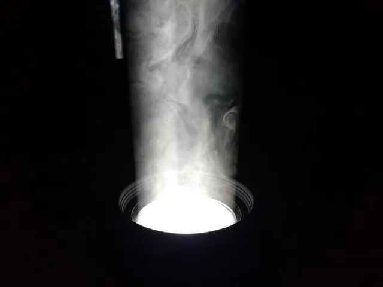
Літо 2016
На запрошення Юлі Бевзенко зняли її екскурсію районом Золотих воріт. Додали до сферичного відео ілюстровані написи й фотографії.
Віртуальна екскурсія магазином автотоварів. У фінальне відео увійшов експериментальний проїзд магазином із візком. У кадрі — співзасновник 360discoVR Артем Кизюк.
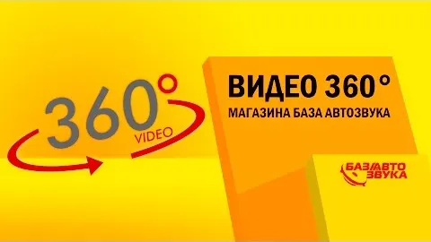
На початку літа 2016 року знімали змагання зі стронгмену у форматі 360°.
Їхали до Чернівців на зйомку для мобільного оператора. Сам проєкт не вийшов, але збереглися кадри, зняті під час підготовки.

20 квітня 2016 року
На iForum ми разом із Samsung показали наші відео в гарнітурах Gear VR. За статистикою конференції, стенд був найвідвідуванішим у демозоні.

Березень 2016
Спільно з LIMELITE створили одне з перших рекламних 360°-відео в Україні.
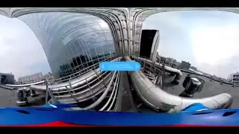
11 березня 2016 року
На технологічній виставці показували обладнання й відео та знімали саму подію.
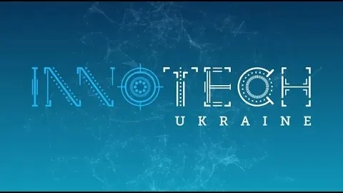
8 березня 2016 року
8 березня знімали Одесу й на вулицях розповідали перехожим про сферичне відео та його застосування.
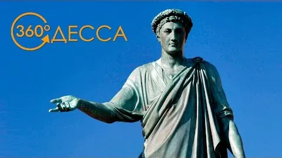
1 березня 2016 року
Перший публічний виступ про 360°-відео відбувся у BiblioTECH на запрошення Олександра Торопова з AIR. Розповіли про зйомку та обробку сферичного відео.
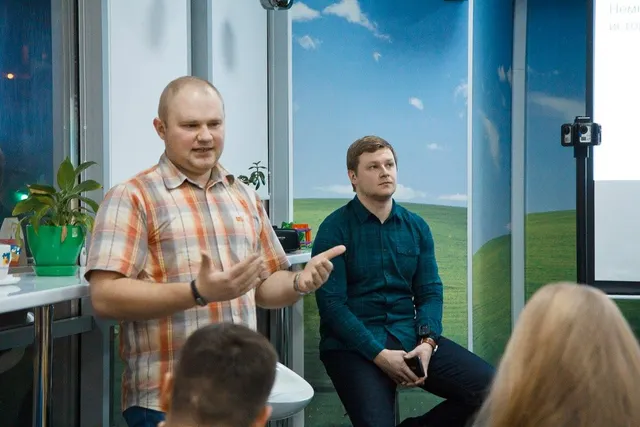
4 лютого 2016 року
4 лютого 2016 року зняли відеозвіт із відкриття виставки донецької художниці Катерини Єрмолаєвої в IZONE. Це була одна з перших наших спроб додати текст до сферичного відео.

27 грудня 2015 року
27 грудня 2015 року, ми зняли передноворічний Львів для "24 каналу". Це був цікавий досвід (також як і попередня робота на Софійській площі), тому що доводилося знімати практично в повній темряві з точковими джерелами світла.

19 грудня 2015 року
19 грудня 2015 року спільно з ТСН ми зняли урочисте відкриття новорічної ялинки в Києві. Знімали з рук, тому що "наддовгих" штативів у нас тоді ще не було. Це було наше перше відео, яке перевалило за 100 тисяч переглядів на Youtube.

5 грудня 2015 року
У грудні 2015 року знімали зустріч відеоблогерів AIR Meetup. Уперше використали власні кріплення «Мучача» для камер GoPro або Xiaomi Yi та саморобний «Світловий меч» для всеспрямованого освітлення.
20 листопада 2015 року
20 листопада 2015 року в клубі "Атлас" пройшла церемонія нагородження переможців конкурсу "Grant's Золотий Аристократ". Там ми познайомилися з Ярославом Лодигіним, з яким через кілька років зустрілися на знімальному майданчика фільму "Дике поле"- він був режисером, а продюсером був Володимир Яценко, з яким ми познайомилися за тиждень до цього на Kyiv Mini Maker Faire. Збіг?
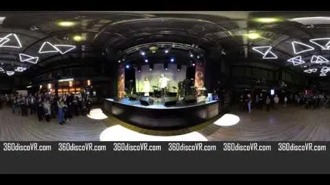
14 листопада 2015 року
На осінньому ярмарку Kyiv Maker Faire ми експерементували з динамічним рухом камери. Саме після цього досвіду ми активно почали займатися розробками системи стабілізації, тому що доступних нам програмних засобів стабілізації ще не існувало. На цьому ж ярмарку ми познайомилися з Володимиром Яценко - засновником і генеральним продюсером LIMELITE.

16-18 жовтня 2015 року
В рамках Media Hack Weekend 2015 ми, спільно з KPI Live, створили (напевно) перший в Україні репортаж в форматі "відео 360". Без сліз на це вже не подивишся, але тоді ми дуже пишалися виконаною за 2 дні роботою.
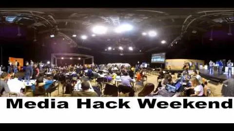
Жовтень 2015 року
Щоб щось пропонувати клієнтам, потрібно було трохи попрацювати над портфоліо. "Місто Лева" стало першою локацією, яку ми зняли в 360.
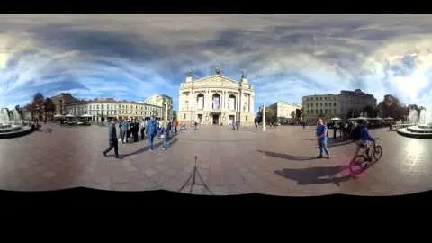
1 вересня 2015 року
Влітку 2015 року, ми почали створювати перші прототипи власного рішення для зйомок 360-відео, а восени почали вже активно використовувати свої розробки в роботі. Не те щоб нам дуже хотілося "винаходити велосипед", просто вибору особливо й не було - подібної техніки в Україні не існувало. 1 вересня 2015 року, ми вважаємо днем народження 360discoVR.